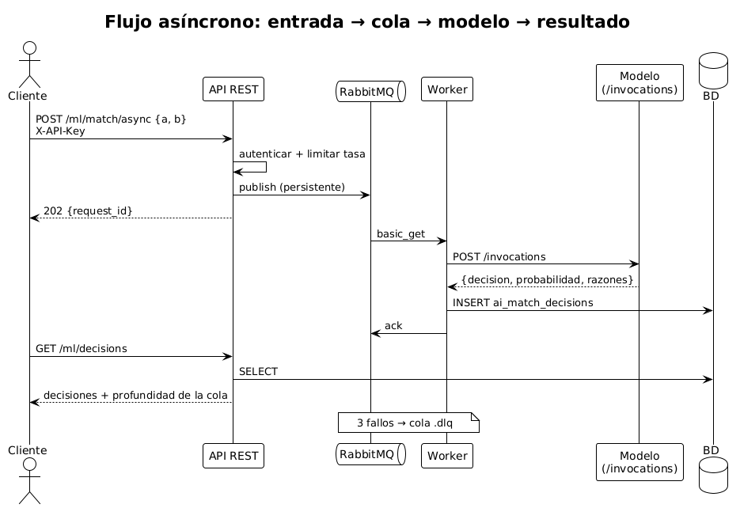

Arquitectura desplegada

API REST · RabbitMQ · worker · contenedor del modelo (contrato SageMaker) · dashboard · CloudWatch
Comparar precios exige agrupar ofertas del mismo producto entre tiendas. Un error mezcla precios de productos distintos.
El emparejador determinista (GTIN/MPN) deja casos ambiguos; antes se enviaban a un LLM (lento y caro).
API REST · RabbitMQ · worker · contenedor del modelo (contrato SageMaker) · dashboard · CloudWatch
Honestidad: datos sintéticos de una tienda; la primera versión dio F1 = 1,00 (examen circular) y se endureció con ruido.
| Prec. | Recall | F1 | |
|---|---|---|---|
| Random Forest | 0.9153 | 0.9 | 0.9076 |
| Línea base | 0.7403 | 0.95 | 0.8321 |
Umbral 0,70 → precisión 0,94 con 82 % de cobertura

X-API-Key · límite de tasa 429 · validación 422 · TLS en el borde · puertos internos cerrados/ml/match/asyncpika no es seguro entre hilosEn AWS (t3.medium, desde otro continente): 0 fallos; 39 → 80 → 102 req/s con 20/50/100 usuarios; CPU máx. 77 % ⇒ ≈ 100 req/s por instancia. Con ALB + Auto Scaling (150 usuarios): CPU 95 % → 2 → 4 réplicas; 96 700 peticiones, 0 fallos, 230 req/s.
| Opción | Costo aprox. | Cuándo |
|---|---|---|
| EC2 t3.medium + Docker (ASG + ALB, desplegado) | ≈ USD 0,04/h por instancia | Escala 2 → 4 réplicas por CPU 50 % (medido), HTTPS por CloudFront |
| SageMaker ml.m5.large | ≈ USD 0,12/h | Auto-scaling y monitoreo gestionados |
| SageMaker Serverless | por invocación | Tráfico intermitente |
CreateModel denegado por IAM del laboratorio → plan B en EC2; el mismo contrato /invocations migra sin cambios